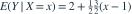

联合正态，均值为 ，标准差为 ，相关系数为
联合正态，均值为 ，标准差为 ，相关系数为  。 为多少？
。 为多少？- A
- B

- C
- D

我已思考，展开答案与解析
正确答案：C

。- 代入 得 。
易错提醒回归系数是相关系数乘两个标准差的比。
数学三·概率统计基础专题 · 数学三概率统计基础专题·原创第19题
按数学三常见概率统计知识点原创；不是历年真题或教材原题。
联合正态，均值为 ，标准差为 ，相关系数为 。 为多少？
。数学三·概率统计基础专题 · 数学三概率统计基础专题·原创第19题
按数学三常见概率统计知识点原创；不是历年真题或教材原题。